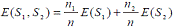

Decision Tree¶
Apa itu Decision Tree?¶
Konsep¶
Decision tree adalah salah satu metode klasifikasi yang paling populer, karena mudah untuk diinterpretasi oleh manusia. Decision tree adalah model prediksi menggunakan struktur pohon atau struktur berhirarki.
Konsep dari pohon keputusan adalah mengubah data menjadi decision tree dan aturan-aturan keputusan. Manfaat utama dari penggunaan decision tree adalah kemampuannya untuk mem-break down proses pengambilan keputusan yang kompleks menjadi lebih simple, sehingga pengambil keputusan akan lebih menginterpretasikan solusi dari permasalahan.
Nama lain dari decision tree adalah CART (Classification and Regression Tree). Dimana metode ini merupakan gabungan dari dua jenis pohon, yaitu classification tree dan juga regression tree. Untuk memudahkan, berikut ilustrasi dari keduanya.
Ilustrasi Decision Classification Tree¶

Ilustrasi Decision Regression Tree¶
Untuk gambar diatas merupakan contoh dari classification tree, sedangkan gambar dibawah merupakan contoh dari regression tree.

Dalam beberapa aplikasi, akurasi dari sebuah klasifikasi atau prediksi adalah satu-satunya hal yang ditonjolkan dalam metode ini, misalnya sebuah perusahaan direct mail membuat sebuah model yang akurat untuk memprediksi anggota mana yang berpotensi untuk merespon permintaan, tanpa memperhatikan bagaimana atau mengapa model tersebut bekerja.
Decision tree juga berguna untuk mengeksplorasi data, menemukan hubungan tersembunyi antara sejumlah calon variabel input dengan sebuah variabel target. Decision tree memadukan antara eksplorasi data dan pemodelan, sehingga sangat bagus sebagai langkah awal dalam proses pemodelan bahkan ketika dijadikan sebagai model akhir dari beberapa teknik lain.
Dalam beberapa aplikasi, akurasi dari sebuah klasifikasi atau prediksi adalah satu-satunya hal yang ditonjolkan dalam metode ini, misalnya sebuah perusahaan direct mail membuat sebuah model yang akurat untuk memprediksi anggota mana yang berpotensi untuk merespon permintaan, tanpa memperhatikan bagaimana atau mengapa model tersebut bekerja.

Kelebihan lain dari metode ini adalah mampu mengeliminasi perhitungan atau data-data yang kiranya tidak diperlukan. Sebab, sampel yang ada biasanya hanya diuji berdasarkan kriteria atau kelas tertentu saja.
Model Pohon Keputusan¶
Pohon keputusan adalah model prediksi menggunakan struktur pohon atau struktur berhirarki. Contoh dari pohon keputusan dapat dilihat di Gambar berikut ini.

Disini setiap percabangan menyatakan kondisi yang harus dipenuhi dan tiap ujung pohon menyatakan kelas data. Contoh di Gambar 1 adalah identifikasi pembeli komputer,dari pohon keputusan tersebut diketahui bahwa salah satu kelompok yang potensial membeli komputer adalah orang yang berusia di bawah 30 tahun dan juga pelajar. Setelah sebuah pohon keputusan dibangun maka dapat digunakan untuk mengklasifikasikan record yang belum ada kelasnya. Dimulai dari node root, menggunakan tes terhadap atribut dari record yang belum ada kelasnya tersebut lalu mengikuti cabang yang sesuai dengan hasil dari tes tersebut, yang akan membawa kepada internal node (node yang memiliki satu cabang masuk dan dua atau lebih cabang yang keluar), dengan cara harus melakukan tes lagi terhadap atribut atau node daun. Record yang kelasnya tidak diketahui kemudian diberikan kelas yang sesuai dengan kelas yang ada pada node daun. Pada pohon keputusan setiap simpul daun menandai label kelas. Proses dalam pohon keputusan yaitu mengubah bentuk data (tabel) menjadi model pohon (tree) kemudian mengubah model pohon tersebut menjadi aturan (rule).
Algoritma Pohon Keputusan¶
Pohon dibangun dengan cara membagi data secara rekursif hingga tiap bagian terdiri dari data yang berasal dari kelas yang sama. Bentuk pemecahan (split) yang digunakan untuk membagi data tergantung dari jenis atribut yang digunakan dalam split. Untuk melakukan pemisahan obyek (split) dilakukan tes terhadap atribut dengan mengukur tingkat ketidakmurnian pada sebuah simpul (node). Pada algoritma C.45 menggunakan rasio perolehan (gain ratio). Sebelum menghitung rasio perolehan, perlu menghitung dulu nilai informasi dalam satuan bits dari suatu kumpulan objek. Cara menghitungnya dilakukan dengan menggunakan konsep entropi.

S adalah ruang (data) sampel yang digunakan untuk pelatihan, p+ adalah jumlah yang bersolusi positif atau mendukung pada data sampel untuk kriteria tertentu dan p- adalah jumlah yang bersolusi negatif atau tidak mendukung pada data sampel untuk kriteria tertentu. ntropi(S) sama dengan 0, jika semua contoh pada S berada dalam kelas yang sama. Entropi(S) sama dengan 1, jika jumlah contoh positif dan negative dalam S adalah sama. Entropi(S) lebih dari 0 tetapi kurang dari 1, jika jumlah contoh positif dan negative dalam S tidak sama [Mitchell,1997].Entropi split yang membagi S dengan n record menjadi himpunan-himpunan S1 dengan n1 baris dan S2 dengan n2 baris adalah : rumus2.gif c

Kemudian menghitung perolehan informasi dari output data atau variabel dependent y yang dikelompokkan berdasarkan atribut A, dinotasikan dengan gain (y,A). Perolehan informasi*, gain* (y,A), dari atribut A relative terhadap output data y adalah:

IMPLEMENTASI¶
Untuk mengimplementasikan algoritma ini di Scikit-Learn identik dengan masalah pembelajaran mesin biasa, saya akan mengimpor libraries dan kumpulan data, melakukan beberapa analisis data, membagi data ke dalam set pelatihan dan pengujian, melatih algoritma, membuat prediksi, dan akhirnya kami akan mengevaluasi kinerja algoritma pada dataset. Pertama saya akan mencoba membuat algoritma classification sederhana menggunaka tree pada Phyton sebagai berikut:
Langakah 1 install sklearn pada command prompt seperti ini
pip install sklearnLangkah 2 importkan tree dari librarie sklearn
from sklearn import tree
clf = tree.DecisionTreeClassifier()Langkah 3 Masukkan data seperti berikut
#[height, hair-length, voice-pitch]
X = [ [190, 50, 0],
[167, 42,1],
[136, 35,1],
[174, 15,0],
[141, 28,1]]
Y = ['man', 'woman', 'woman', 'man', 'woman']Langkah 4 Masukkan data baru untuk memprediksi class data tersebut, misalnya:
- height = 190
- hail-length = 37
- voice-pitch = 0
clf = clf.fit(X, Y)
prediction = clf.predict([[190, 37,0]])
print(prediction)Hasil prediksi data baru
['man']
Process finished with exit code 0Sehingga didapatkan diprediksi bahwa data tersebut merupakan data dari seorang laki-laki.
Implementasi Classification Tree¶
Data set untuk Implementasi Classifikacation Tree dapat didownload di sini
Langakah 1 install library pada command prompt seperti ini:
pip install pandas
pip install numpy
pip install matplotlibLangkah 2 importkan libray pada python:
import pandas as pd
import numpy as np
import matplotlib.pyplot as pltLangkah 3 Importkan data, karena file dalam format CSV, akan menggunakan metode read_csv panda untuk membaca file data CSV. Jalankan skrip berikut untuk melakukannya:
dataset = pd.read_csv('authentication.csv')Langkah 4 Jalankan perintah berikut untuk melihat jumlah baris dan kolom dalam dataset:
dataset.shapeOutput akan menunjukkan "(1372,5)", yang berarti bahwa dataset kami memiliki 1.372 catatan dan 5 atribut. Langkah 5 Jalankan perintah berikut untuk memeriksa lima records pertama dari dataset:
dataset.head()Langkah 6 Pada bagian ini kita akan membagi data kita menjadi atribut dan label dan kemudian akan membagi data yang dihasilkan menjadi data training dan data test. Untuk membagi data menjadi atribut dan label, jalankan kode berikut:
X = dataset.drop('Class', axis=1)
y = dataset['Class']Di sini variabel X berisi semua kolom dari dataset, kecuali kolom "Kelas", yang merupakan label. Variabel y berisi nilai-nilai dari kolom "Kelas". Variabel X adalah set atribut dan variabel y berisi label yang sesuai.
Langkah 7 Library model_selection dari Scikit-Learn berisi metode train_test_split, yang akan digunakan untuk membagi data secara acak menjadi set training dan test. Jalankan kode berikut untuk melakukannya:
from sklearn.model_selection import train_test_split
X_train, X_test, y_train, y_test = train_test_split(X, y, test_size=0.20)Dalam kode di atas, parameter test_size menentukan rasio set test, yang digunakan untuk membagi 20% dari data ke set test dan 80% untuk set training.
Langkah 8 Fungsi untuk melakukan training data dengan giniIndex dengan menjalankan kode berikut:
def train_using_gini(X_train, X_test, y_train):
# Creating the classifier object
clf_gini = DecisionTreeClassifier(criterion = "gini",
random_state = 100,max_depth=3, min_samples_leaf=5)
# Performing training
clf_gini.fit(X_train, y_train)
return clf_giniLangkah 9 fungsi untuk melakukan training data dengan Entropy dengan menjalankan kode berikut:
def tarin_using_entropy(X_train, X_test, y_train):
# Decision tree with entropy
clf_entropy = DecisionTreeClassifier(
criterion = "entropy", random_state = 100,
max_depth = 3, min_samples_leaf = 5)
# Performing training
clf_entropy.fit(X_train, y_train)
return clf_entropyLangkah 10 Setelah data telah dibagi ke dalam set pelatihan dan pengujian, langkah terakhir adalah melatih algoritma tree pada data ini dan membuat prediksi. Scikit-Learn berisi library tree, yang berisi kelas /metode bawaan untuk berbagai algoritma tree. Karena kita akan melakukan tugas klasifikasi di sini, kita akan menggunakan DecisionTreeClassifier untuk contoh ini. Jalankan skrip berikut:
from sklearn.tree import DecisionTreeClassifier
classifier = DecisionTreeClassifier()
classifier.fit(X_train, y_train)Langkah 11 Sekarang classifier telah ditraining, mari kita membuat prediksi pada data uji. Untuk membuat prediksi, metode prediksi kelas DecisionTreeClassifier digunakan. Lihatlah kode berikut untuk penggunaan:
y_pred = classifier.predict(X_test)Langkah 12 Sekarang kita akan melihat seberapa akurat algoritma kita dengan menjalankan kode berikut:
from sklearn.metrics import classification_report, confusion_matrix
print(confusion_matrix(y_test, y_pred))
print(classification_report(y_test, y_pred))Langkah 13 Sehingga menghasilkan evaluasi berikut:
[[158 3]
[ 1 113]]
precision recall f1-score support
0 0.99 0.98 0.99 161
1 0.97 0.99 0.98 114
accuracy 0.99 275
macro avg 0.98 0.99 0.99 275
weighted avg 0.99 0.99 0.99 275
Process finished with exit code 0Dari matriks diatas, dapat dilihat bahwa dari 275 contoh pengujian ini menghasilkan akurasi yang hampir akurat yakni 99%.